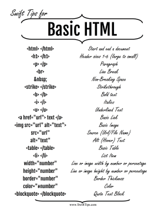

Para criar um site, é importante conhecer os comandos básicos de HTML e CSS. Aqui estão alguns dos principais comandos que você precisa saber:
Os comandos HTML são usados para estruturar o conteúdo do seu site. Aqui estão alguns exemplos:
<p>: Parágrafo<h1>: Título principal<h2>: Título secundário<img>: ImagemOs comandos CSS são usados para estilizar o conteúdo do seu site. Aqui estão alguns exemplos:
background-color: Cor de fundocolor: Cor do textofont-size: Tamanho da fontefont-family: Família da fonte